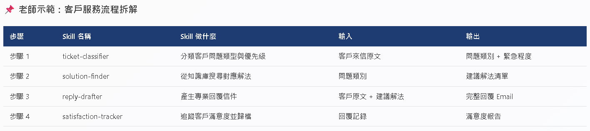

Day 2 · Part 1 · 上午 A｜09:00–09:30
Day 1 回顧
+ 多 Skill 思維
從「做一道菜」進化到「開一間餐廳」
學會將大任務拆解為多個 Skill
⏰ 30 分鐘
🧠 概念強化
📚 模組 A
A-1｜Day 1 你學會了什麼？
| Day 1 學會了 | 關鍵一句話 |
|---|
| Agent Skills 概念 | Skill = AI 的食譜，預先寫好規則 |
| SKILL.md 結構 | Frontmatter + 指令 + 範例 = 一個 Skill |
| 四大關鍵詞 | MUST / NEVER / Check if / Ask user |
| 跨平台部署 | .agent/skills/ 和 .claude/skills/ 格式相同 |
| 防呆機制 | 輸入驗證 + 例外處理 + 品質門檻 + 安全閥 |
| 流程變現路徑 | 專業知識 → 流程 → Skill → 表單 → 系統 |
💬 互動問答：昨天回去後，有沒有人想到新的工作流程可以做成 Skill？
請 2–3 位學員分享（每人 30 秒）
A-2｜為什麼一個 Skill 不夠？
真實工作的樣子：
開完會 → 整理會議紀錄 → 依據決議寄出跟催 Email → 追蹤待辦進度
這是「一條鏈」，不是「一個點」！如果每一步都是獨立的 Skill，你還是要手動複製貼上結果——那跟沒有 Skill 差在哪？
🍳 一道菜 vs 一間餐廳
📦 Day 1：做一道菜
單一 Skill，獨立執行
→ Email 回覆助手
→ 會議紀錄產生器
🏪 Day 2：開一間餐廳
多個 Skill 分工協作
→ 前台收集需求
→ 廚房處理任務
→ 品管驗證品質
→ 外送交付成果

A-2｜如何拆解大任務為多個 Skill？
原則一：單一職責原則
每個 Skill 只做「一件事」
錯誤：一個 Skill 同時分析需求 + 撰寫提案 + 審查提案
正確：三個獨立 Skill，各做各的
原則二：輸入輸出標準化
每個 Skill 的輸入和輸出格式固定
上一個 Skill 的輸出 = 下一個 Skill 的輸入
就像 USB 接頭：標準化才能串接
原則三：可獨立測試
每個 Skill 可以單獨啟動測試
不需要跑完整個流程才能驗證
方便除錯和持續改進

A-2｜示範：客戶服務流程拆解
原始流程（腦子裡模糊的一坨）
「處理客戶問題」← 太籠統，AI 無法執行
↓ 拆解後（5 個清晰的 Skill）
1. email-classifier → 分類來信（詢問 / 客訴 / 合作 / 其他）
2. inquiry-responder → 回覆詢問類信件
3. complaint-handler → 處理客訴並生成解決方案
4. follow-up-tracker → 追蹤未解決問題
5. weekly-report-gen → 生成每週客服摘要報告
🎯 今天上午你要建立的：
客戶提案流程的 3-Skill 群組 + 1 個流程編排 Skill（proposal-workflow）
A-3｜練習：拆解你自己的工作流程
📌 老師示範：客戶服務流程拆解
| 步驟 | Skill 名稱 | Skill 做什麼 | 輸入 | 輸出 |
|---|
| 步驟 1 | ticket-classifier | 分類客戶問題類型與優先級 | 客戶來信原文 | 問題類別 + 緊急程度 |
| 步驟 2 | solution-finder | 從知識庫搜尋對應解法 | 問題類別 | 建議解法清單 |
| 步驟 3 | reply-drafter | 產生專業回覆信件 | 客戶原文 + 建議解法 | 完整回覆 Email |
| 步驟 4 | satisfaction-tracker | 追蹤客戶滿意度並歸檔 | 回覆記錄 | 滿意度報告 |
✏️ 換你試試：拆解你自己的工作流程
| 步驟 | Skill 名稱 | Skill 做什麼 | 輸入 | 輸出 |
|---|
| 步驟 1 | | | | |
| 步驟 2 | | | | |
| 步驟 3 | | | | |
| 步驟 4（選填） | | | | |
💡 提示：
先想「流程有幾個步驟」→「每個步驟的輸入是什麼、輸出是什麼」→「給每個步驟命名（英文、用橫線連接）」

Part 1 完成！
現在你有了
拆解的思維
接下來讓我們實際動手——
建立三個互相關聯的 Skill 群組！
✅ 概念建立完成
🔗 下一步：建立提案流程 Skill 群組
前往 Part 2 →